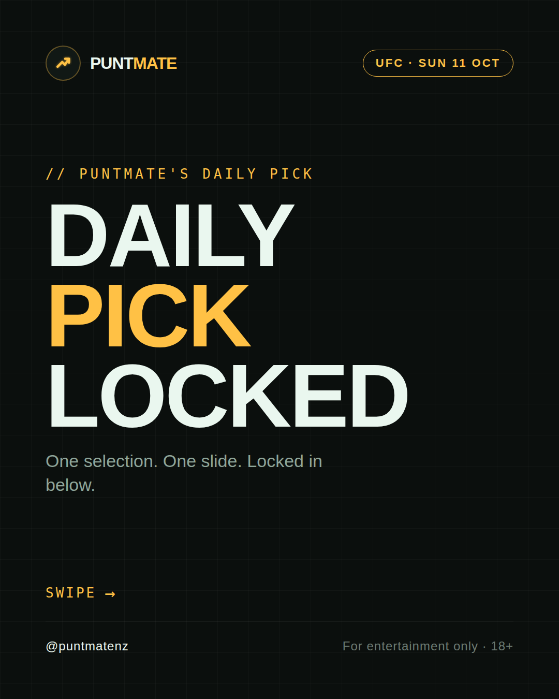
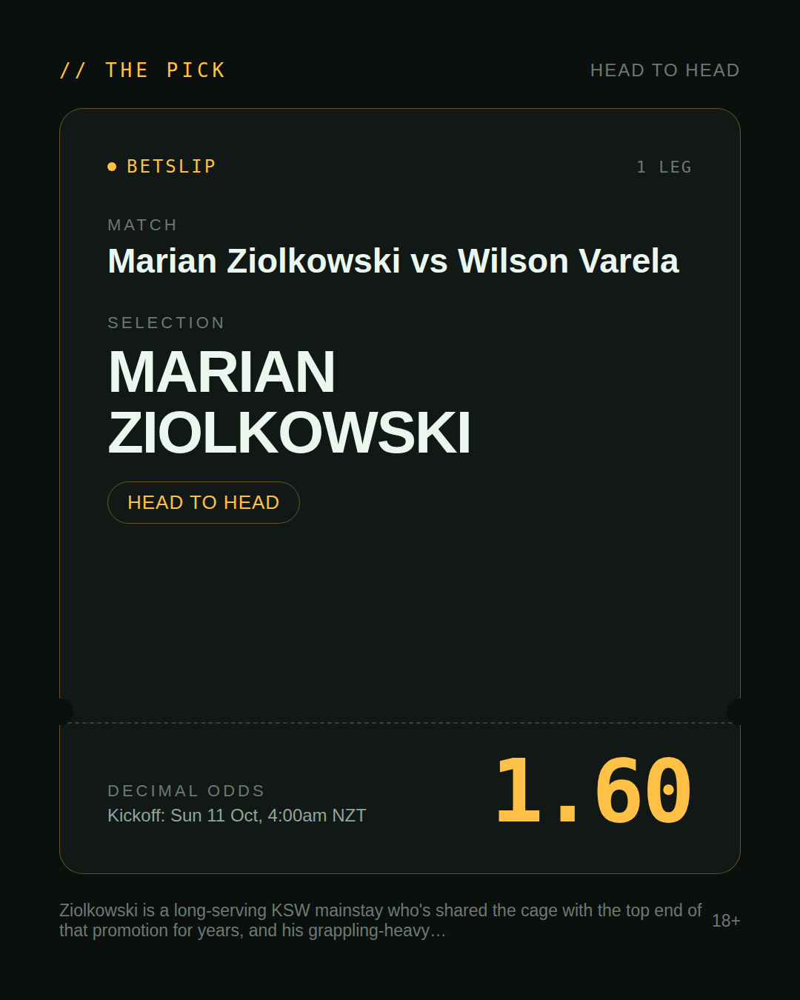
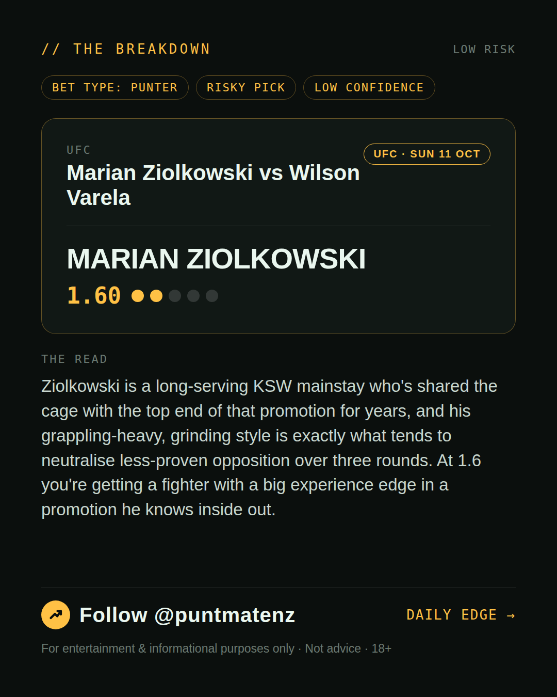
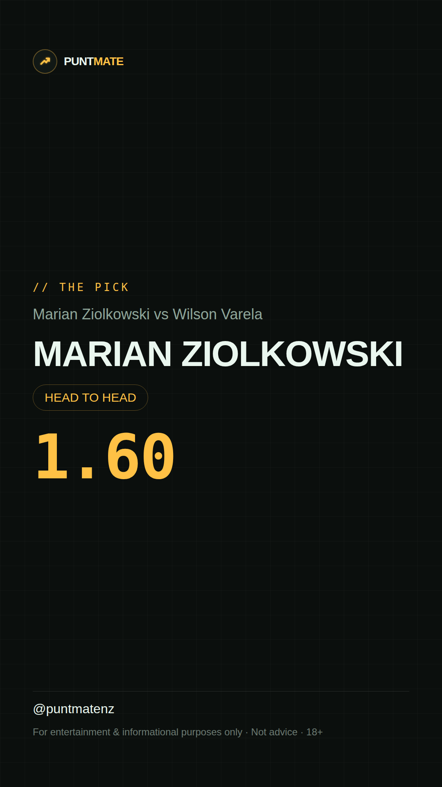

*🎯 PUNTMATE NZ — UFC* 🏟 Marian Ziolkowski vs Wilson Varela *PICK:* MARIAN ZIOLKOWSKI *ODDS:* 1.60 (Head to Head) *BET TYPE: PUNTER* _Ziolkowski is a long-serving KSW mainstay who's shared the cage with the top end of that promotion for years, and his grappling-heavy, grinding style is exactly what tends to neutralise less-proven opposition over three rounds. At 1.6 you're getting a fighter with a big experience edge in a promotion he knows inside out._ ────────────────── 📲 Join Telegram for daily picks ⚠️ For entertainment & informational purposes only. Not advice. 18+.
🎯 UFC — Marian Ziolkowski vs Wilson Varela MARIAN ZIOLKOWSKI @ 1.60 (Head to Head) BET TYPE: PUNTER Solid touch here. Not a lock, but the value's real and the form backs it up. Ziolkowski is a long-serving KSW mainstay who's shared the cage with the top end of that promotion for years, and his grappling-heavy, grinding style is exactly what tends to neutralise less-proven opposition over three rounds. At 1.6 you're getting a fighter with a big experience edge in a promotion he knows inside out. Follow for daily value picks → @puntmatenz ⚠️ For entertainment & informational purposes only. Not advice. 18+. #PuntmateNZ #SportsBetting #NZTAB #UFC
| has_pick | True |
| pick_id | 2026-10-09_Marian_Ziolkowski_vs_Wilson_Varela |
| run_id | 38002330178 |
| generated_at | 2026-10-09T23:04:37.583452+00:00 |
| post_date | 2026-10-09 |
| match | Marian Ziolkowski vs Wilson Varela |
| sport | mma_mixed_martial_arts |
| sport_label | UFC |
| market | Head to Head |
| selection | MARIAN ZIOLKOWSKI |
| odds | 1.60 |
| bet_type | PUNTER_BET |
| bet_type_label | BET TYPE: PUNTER |
| bet_type_reason | Solid touch here. Not a lock, but the value's real and the form backs it up. Ziolkowski is a long-serving KSW mainstay who's shared the cage with the top end of that promotion for years, and his grappling-heavy, grinding style is exactly what tends to neutralise less-proven opposition over three rounds. At 1.6 you're getting a fighter with a big experience edge in a promotion he knows inside out. |
| classification | RISKY_PICK |
| risk | RISKY_PICK |
| confidence | LOW |
| confidence_label | LOW |
| final_explanation | Ziolkowski is a long-serving KSW mainstay who's shared the cage with the top end of that promotion for years, and his grappling-heavy, grinding style is exactly what tends to neutralise less-proven opposition over three rounds. At 1.6 you're getting a fighter with a big experience edge in a promotion he knows inside out. |
| public_caution | Keep this one light — the value's there but so is the uncertainty. |
| theme | night |
| carousel_paths | ['data/review/2026-10-09_Marian_Ziolkowski_vs_Wilson_Varela/cover.png', 'data/review/2026-10-09_Marian_Ziolkowski_vs_Wilson_Varela/tip.png', 'data/review/2026-10-09_Marian_Ziolkowski_vs_Wilson_Varela/breakdown.png'] |
| carousel_urls | ['https://raw.githubusercontent.com/kingofthecastle24/puntmate/main/data/cards/2026-10-09_Marian_Ziolkowski_vs_Wilson_Varela_night_1_cover.png', 'https://raw.githubusercontent.com/kingofthecastle24/puntmate/main/data/cards/2026-10-09_Marian_Ziolkowski_vs_Wilson_Varela_night_2_tip.png', 'https://raw.githubusercontent.com/kingofthecastle24/puntmate/main/data/cards/2026-10-09_Marian_Ziolkowski_vs_Wilson_Varela_night_3_breakdown.png'] |
| story_path | data/review/2026-10-09_Marian_Ziolkowski_vs_Wilson_Varela/story.png |
| story_url | https://raw.githubusercontent.com/kingofthecastle24/puntmate/main/data/cards/2026-10-09_Marian_Ziolkowski_vs_Wilson_Varela_night_story.png |
| intended_platforms | ['telegram', 'instagram_feed', 'instagram_story', 'facebook'] |
| workflow_state | GENERATED |
| has_punter_multi | False |
| has_gambler_multi | False |
| has_degenerate_multi | False |